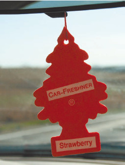
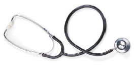

Отличительные признаки «русалочки»
На дорогах нашей страны становится все больше автомобилей, прибывших из затопляемых районов. Так сказать, машин, побывавших в роли подводной лодки (рис. 1.13).
Рис. 1.13. Спасение «подводных лодок» – дело рук спасателей
Чаще всего они выглядят на авторынке очень привлекательно, что неудивительно – их тщательно восстанавливают, убирая все внешние следы «утопления». И многие неопытные покупатели приобретают такие машины, ведь их стоимость несколько ниже, чем точно таких же, только не тонувших (обычно не очень намного, чтобы не вызывать подозрений, – на $400–600), внешний вид вполне достойный, об утоплении никто не сообщает. Сниженную же цену продавец объясняет либо тем, что срочно нужны деньги, либо некоторыми «мелочами» (например, потеющими после дождя фарами), из-за которых и приходится продавать машину дешевле.
Примечание
У всех «утопленников» запотевают фары, поэтому, если вам предлагают автомобиль с подобным недостатком, присмотритесь к нему внимательнее. Бывает, что запотевание фар связано с плохой прокладкой, но вполне можно нарваться и на «русалочку»
Проблемы начинаются после покупки. Иногда владелец «подводной лодки» чувствует себя счастливчиком несколько месяцев, если он приобрел автомобиль весной. Но как только наступает осень, холодает, в салоне появляется плесень. Вывести ее невозможно никакими средствами. Плесневеет все – сиденья, ремни безопасности, даже приборная панель. Чаще всего не приходится даже ждать холодного времени года: начинает стучать двигатель, не включается печка, возникают проблемы с электрооборудованием, трансмиссией и т. д. Владелец машины бросается в автосервис и там узнает, что он – хозяин самой настоящей «русалочки».
А ведь распознать «утопленницу» можно было и не выезжая с авторынка. Первое, что выдает «искупавшийся» автомобиль, – запах в салоне. Если в салоне не слишком «поношенного» европейского автомобиля имеется ароматизатор (рис. 1.14), но при этом все равно неистребимо пахнет сыростью и гнилью, можно больше уже ни на что не смотреть. Этот автомобиль тонул, и покупать его ни в коем случае нельзя.

Рис. 1.14. Автомобильный освежитель воздуха «елочка»
Еще одним верным признаком являются следы коррозии там, где их по определению быть не должно. Например, на проволочном каркасе под сиденьями – чаще всего эти каркасы не проходят антикоррозийную обработку, так как на них не действуют неблагоприятные факторы внешней среды. Ну а после «купания» голый металл, конечно же, ржавеет. Также подозрительны следы ржавчины на полу (но не непосредственно под ногами водителя и пассажиров, если автомобилю более 10 лет).
Если тонувший автомобиль готовили к продаже небрежно, то в салоне и багажнике можно обнаружить характерные следы воды – «ватерлинию», разводы на обивке сидений, коробление карт дверей. Кожаная обивка «дубеет», становится жесткой.
Примечание
Отсутствие подобных признаков ни о чем не говорит – они могут быть выведены с помощью химчистки салона и специальных средств для смягчения кожи. Сигналом является лишь наличие подобных недостатков.
Нетрудно проверить и шумоизоляцию пола, а по ее состоянию можно судить и о том, была ли машина под водой. Шумоизоляция изготавливается из войлока, а в воде он сбивается, теряет однородность (кстати, характерный запах идет именно от шумоизоляции).
Неплохо сигнализирует об «утоплении» и электрика – она, как известно, не выносит влаги. Так что, если что-то не работает, а причину продавец назвать не может, это повод для серьезных подозрений. Если же продавец утверждает, что вся проблема в сгоревшем предохранителе, то следует тут же заменить предохранитель. То же самое касается и «сгоревших» лампочек.
Если вы думаете, что неработающий звуковой сигнал открывания дверей – мелочь, то учтите, что это может быть признаком выхода из строя дорожки в компьютере или контроллере. Отремонтировать подобную неисправность невозможно, такие приборы подлежат полной замене (и за неплохие деньги).
В диагностике «утопленника» может помочь обычный стетоскоп (рис. 1.15): с его помощью можно услышать характерный повышенный гул подшипников всех навесных агрегатов – при «утоплении» из них вымывается смазка.

Рис. 1.15. Обычный стетоскоп может помочь в диагностике «утопленника»
Совет
Осмотрите не один автомобиль такой марки и модели, а несколько и сравните имеющиеся у них недостатки (обычно каждая марка и модель имеет собственный набор характерных проблем). В этом случае вы сможете с большей объективностью судить о предлагаемой вам машине, а также о словах продавца, который уверяет, что подобные «мелочи» присутствуют у всех автомобилей данной марки и модели.
Приобретение тонувшего автомобиля – это большая головная боль и очень немаленькие расходы. Так что будьте внимательны, ведь продавцы таких машин рассчитывают в основном на неопытных покупателей, на тех, кто приобретает свой первый автомобиль.